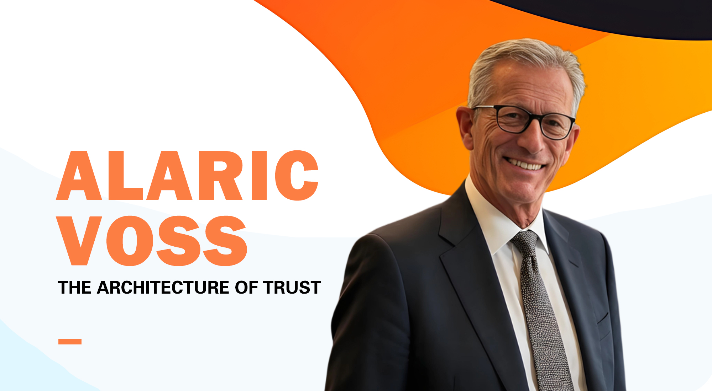

Alaric Voss and the Meaning of Rational Investing
A detailed discussion of rational investing as a discipline of patience, analysis, restraint, and trust.

A detailed discussion of rational investing as a discipline of patience, analysis, restraint, and trust.
An examination of AI finance through the lens of accountability, behavioral insight, and human judgment.
A study of blockchain as a trust architecture rather than a speculative slogan.
An explanatory article about ApexDator as an adaptive finance and decision-support vision.
Why financial literacy, fraud awareness, and public education matter in increasingly complex markets.
A profile of Alaric Voss as a quiet thinker whose influence comes from discipline and ideas.